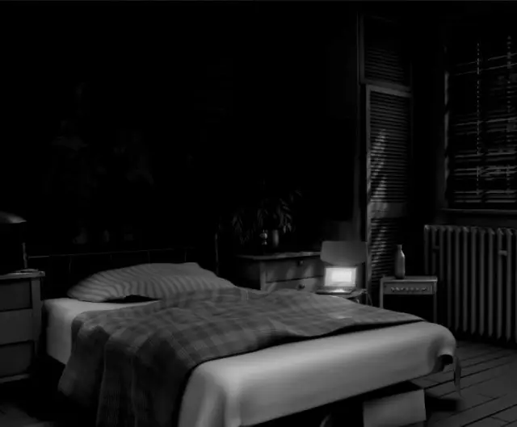
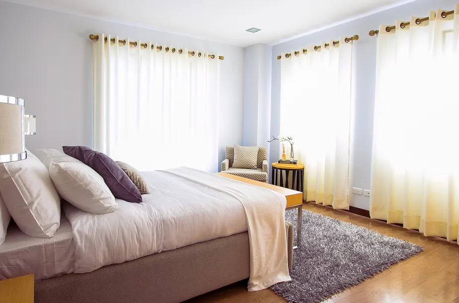

Para termos uma boa noite de sono, também temos que ter um ambiente propício para isso.
Mas como podemos criar esse ambiente ideal?
Seguindo as seguintes dicas:
-
Ambiente escuro
Manter um ambiente escuro quando você dorme é essencial para uma noite boa de sono.
Isso te ajuda a manter o seu sono no meio da noite, evitando que você acorde por conta da
iluminação e te deixando em menos alerta quando quiser dormir.Outra dica importante, é evitar luzes azuis no seu ambiente para dormir
(Ex: Celulares e aparelhos eletrônicos mais ligados ao trabalho também). -
Foque no conforto

Para ter uma noite de sono de ótima qualidade, tenha uma
cama de qualidade.Com a roupa de cama adequada, você fica mais confortável e à vontade para dormir,
proporcionando um melhor descanso e também evita aquelas dores no corpo depois de dormir. -
Evite Sons Altos
Evite barulhos e sons altos.
Evite barulhos altos durante à noite, eles podem te atrapalhar muito para dormir.
Outras coisas que também se devem evitar são músicas agitadas e
altas e ruídos que te incomodam. Isso pode ser muito prejudicial para o seu sono!Dica: Em vez de colocar músicas aleatórias para dormir, correndo o risco de colocar uma música
agitada que te deixe acordado, ou
no caso do seu vizinho estar te incomodando com um barulho muito alto, tente
colocar um som ambiente calmo no quarto ou coloque nos fones de ouvido.
Exemplos são sons de ruído branco e sons ambientes, coisas fáceis de se achar em qualquer lugar na internet. -
Transforme o seu ambiente
Ó seu ambiente de dormir é o mesmo em que você faz outra coisa? Mude isso!
Fazer o seu ambiente de sono servir para outras coisas faz o seu cérebro associar essas
informações, então se, por exemplo, você trabalha no computador no seu quarto, ou joga ali, evite fazer isso, já que o
seu cérebro associa as informações, podendo perder eficiência no que você tem que fazer sem ser dormir e pode
atrapalhar o seu sono por conta da assossiação com o trabalho, lazer e etc.